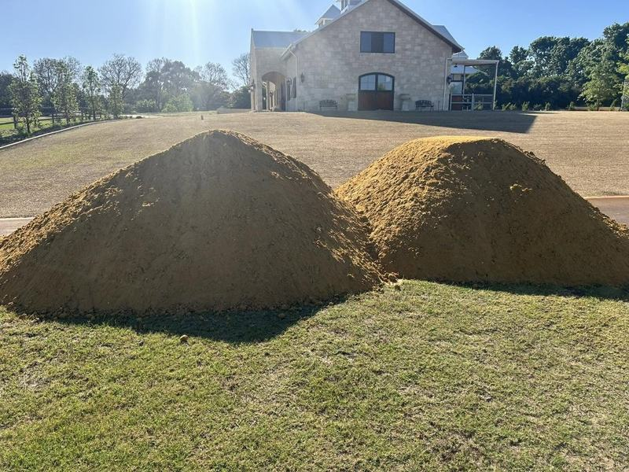

Home › Top Dressing
Lawn Top Dressing & Levelling in Perth.
Professional lawn top dressing from $5/m². A thin, even layer of the right sand or soil levels out the hollows, feeds the soil underneath and gives runners something to knit into. It is the finishing move of every good lawn renovation.

Why Top Dress A Lawn?
Top dressing is a thin layer of sand or sandy loam spread over the lawn and worked down to the soil surface. Done at the right time with the right material, one pass does three jobs at once.
Levels the surface
Hollows, wheel ruts and dips collect water and scalp when you mow. Top dressing fills them gradually, giving you an even surface that mows clean at one height.
Improves the soil
Perth's pale sands are hungry. A loam-based dressing adds organic matter right where the roots are, holding moisture and nutrients that would otherwise drain straight through.
Thickens the sward
After dethatching or coring, a top dress gives exposed runners cover and fresh medium to root into. The lawn comes back denser than it went in.
Top Dressing Pricing
Lawn Top Dressing
Spread and worked in evenly, with the blend matched to your grass and goal: levelling, soil improvement or renovation recovery.
Complete Rejuvenation Package
Dethatch + aeration + top dressing + fertiliser and wetting agent + reticulation check in one visit. Pick all three core services in the calculator and save 10%.
Open the surface first
Top dressing works hardest on a lawn that has just been dethatched or cored, because the material reaches the soil instead of sitting on thatch. We will tell you if yours needs prep first.
When To Top Dress A Lawn In Perth
Spring through early summer, while the lawn is growing hard enough to push up through the new layer. Top dressing the lawn in winter risks smothering dormant grass. Keep each pass thin, around 10 mm, with the leaf still showing through. A badly uneven lawn gets levelled over two or three passes across a season, not one deep fill that buries the grass.
Material matters as much as timing. We use a sandy loam blend with good organic matter mixed through, not plain washed sand, so the lawn is fed as well as levelled. Buffalo takes thinner layers so the surface runners stay in the light. Tell us the grass and the goal and we will match the blend.
Bumpy, patchy or just tired?
Send your lawn size and a few photos through the online quote and we will price the top dressing instantly. You do not need to be home, and EFTPOS is available on the day.
Get Your Free QuoteLawn Top Dressing Perth-Wide
We top dress lawns right across the Perth metropolitan area, with most of our work in the northern corridor.
Top Dressing Questions
When is the best time to top dress a lawn in Perth?
Spring through early summer, while the lawn is actively growing and can push up through the new layer. The ideal moment is straight after dethatching or coring, when the surface is open and the material reaches the soil.
How thick should the top dressing be?
Thin layers of around 10 mm per pass, never burying the leaf completely. The grass must stay visible through the dressing. Badly uneven lawns are levelled over two or more passes rather than one deep fill.
What is the best sand for top dressing a lawn?
We use a sandy loam with organic matter mixed through rather than plain washed sand, so the lawn gets nutrition as well as a level surface. Couch and kikuyu take it well, and buffalo just needs thinner layers so the runners are not smothered. We recommend the right blend for your grass and purpose when we quote.
Can you top dress buffalo or kikuyu lawn?
Yes. Kikuyu and couch handle top dressing readily. Buffalo needs more care: thinner layers so the surface runners are not smothered. Tell us your grass type and we will work to it.
How much does lawn top dressing cost in Perth?
From $5 per square metre with a $150 minimum job. Combine it with dethatching and aeration in the Complete Rejuvenation Package and you save 10%. The quote calculator gives an instant price.
Do you also level lawns?
Yes. Levelling is what top dressing does best. Minor dips disappear in one pass; bigger undulations are brought up over a couple of passes across the season so the grass is never smothered.
Finish the renovation properly.
Fifteen years renovating Perth lawns. Free quotes, no need to be home, EFTPOS on the day.
Get An Instant QuoteGet a price
Send your details and we will price it. Photos help: text them to 0427 206 246 after you send this. Want numbers right now? Use the full calculator.